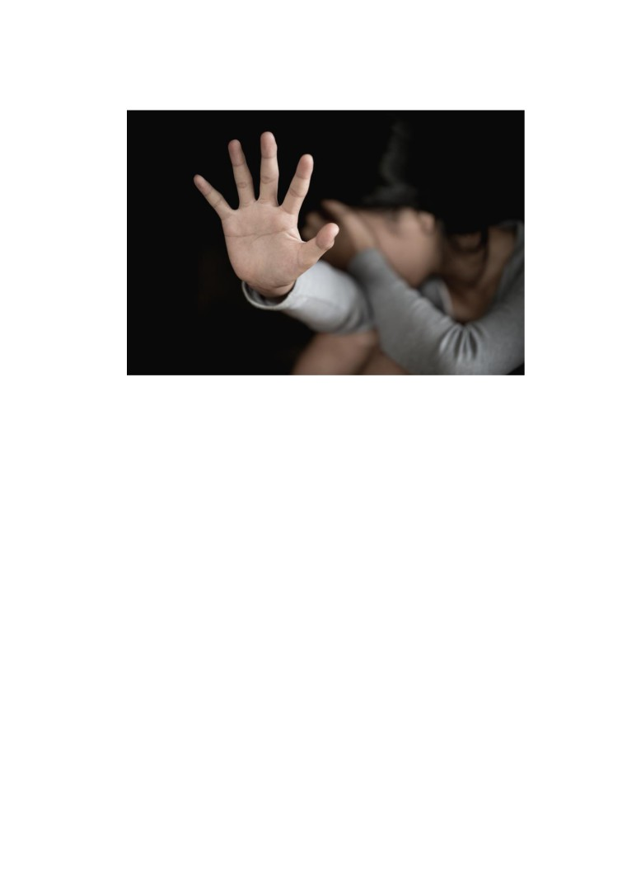

Femeile - pătimitoare ale pandemiei în urma fenomenului
violenței domestice: „Trăiam un război, pe timp de pace”
Violența este folosită pentru a intimida, umili sau înfricoșa victima, iar scopul
acesteia este de a impune puterea și controlul asupra acelei persoane. Bărbații
deseori folosesc violența împotriva partenerelor lor. Peste 50% dintre femei nu
cunosc că există o lege care le protejează împotriva violenței domestice și peste 80%
din cazuri nu sunt raportate.
Virusul COVID-19 își păstrează cursul cel puțin încă opt luni. El a influențat
considerabil toate sferele de activitate și a impus oamenii să rămână în case. Ulterior
femeile sunt nevoite să suporte torturi zi și noapte asupra lor de la bărbații pe care
cândva îi iubeau. Din luna martie coșmarul pe care îl trăiau s-a intensificat vădit.
Maria Diaconescu este mamă a doi copii extraordinari, o fetiță de trei ani și
un flăcău de doisprezece ani. La ai săi 30 de ani, cu studii în medicină lucrează ca
asistentă medicală la policlinica din centrul satului Costești, raionul Ialoveni. Adesea
când mergea la postul de muncă își ascundea petele roșii-vineții de pe față sub câteva
retușuri de pudră. Cele de pe corp le masca sub malete cu mâneci lungi, în picioare
își lua pantaloni clasici mereu și deasupra își punea halatul alb, care îl îmbrăca în
fiecare zi lucrătoare.
Am ajuns să o cunosc într-un centru de asistență și protecție pentru victimele
violenței în familie. Cu privirea fixată în podea, încerca să-și rețină lacrimile care-i
jucau în ochi, gata să se scurgă pe obraji.”Eram un copil împlinit alături de surorile
mele într-o familie fericită, în care părinții se respectau reciproc, încercau să se
înțeleagă doar prin cuvinte. Am crescut o fire blândă și răbdătoare, cum m-au învățat
tăticu și mămica, acasă. Nu mi-am putut imagina vreodată, ca atunci când mă voi
căsători voi face cea mai mare greșeală la 18 ani. Nici nu m-am putut gândi că mi se
poate întâmpla mie, se mai auzeau prin sat zvonuri, dar nu băgam de seamă, că nu
aveam interes să știu toate problemele fiecăruia.”, mi-a răspuns nițel îngândurată și
dezamăgită, când am întrebat-o cum a fost viața ei până la căsătorie. Era îmbrăcată
într-un maiou de culoare cerului senin și în partea stângă a țesăturii un mini-desen
cu o inimă, semn care mi-a dat de înțeles că în sufletul ei se ascund atât de multe
răni, suferințe, nopți nedormite, probleme de sănătate și altele.
Își umezea buzele una de alta și cu greu își amintea de scenele de groază prin
care a trecut, interogând-o de cât timp suportă așa atitudine și care e cauza acestor
situații violente, aud glasul ei delicat: ”Venise acasă noaptea târziu, fostul meu soț,
sub influența alcoolului, i-am deschis ușa, iar atunci a fost prima... prima palmă...
acum 12 ani în urmă, abia născusem , a durut..., mai mult emoțional decât fizic. A
doua zi dimineața mă implora să-l iert, cu greu am închis ochii și am trecut peste,
dându-i a doua șansă. Astfel ani la rând mă amăgeam pe mine că se va schimba într-
o bună zi, nu s-a mai întâmplat. Eu însă am fost chinuită și snopită în bătăi în tot
acest timp, copiii stăteau speriați în casă, îmi doream ca măcar ei să nu fie atinși de
fostul meu soț, nici să nu vadă și să nu audă zgomotele”. Mariei îi tremura mâna
când și-a aranjat ochelarii pe ochi, astfel întrebând-o dacă s-au intensificat numărul
de situații tensionate în timpul pandemiei și atunci am observat o porțiune roșie pe
mâna dreaptă a femeii ”Da, această arsură el mi-a provocat-o, de când s-au impus
restricțiile, pentru a ne proteja sănatatea, a fost supusă starea mea de sănătate la un
adevărat calvar. Afacerea lui a falimentat, iar pe tatăl copiilor mei îl găseam zi de zi
acasă cu sticla în mână, când veneam de la lucru. Eram de două, de trei ori agresată
fizic, cu pumni, cu capul de pereți zguduită, totul depindea de poftele lui,
nemaivorbind de violența psihologică în fiecare seară. A fost ultima picătură, nu mai
puteam tolera, am sunat 112 când a lipit fierul de călcat înfierbântat de mâna mea,
atunci am fost adusă în acest plasament, împreună cu cei doi copii ai mei”. În camera
ei pe dulăpior avea o poză cu copiii ei împreună cu părinții ei, era o poză de familie,
o amintire pe care o păstrează alături de ea, dând dovadă de o fire emotivă. De după
ochelari, în adâncul ochilor ei albaștri observ femeia puternică care a fost în stare să
apeleze la autorități pentru a raporta cazul ei. Îi pare rău că a durat atât de mult timp
ca să conștientizeze că ”Trăiam un război, pe timp de pace”. Acum printr-un ordin
de protecție și divorț, încearcă să obțină încredințarea copiilor în mod exclusiv.
În același plasament am remarcat-o pe colega de cameră a Mariei, o
domnișoară în vârstă de 23 de ani, o persoană timidă în sine pe nume Doina. E de
profesie contabilă și a trăit într-o relație abuzivă timp de un an. Norocul a fost de
partea ei că face parte din categoria generației care nu tolerează violența fizică,
pentru că de altfel pleca înainte de a ridica iubitul ei mâna. Ea nu ar fi încadrat
niciodată demoralizarea și înjosirea în același bol cu violența. Dar psihicul ei dădea
de înțeles că are nevoie de ajutor ”Am apelat la un psiholog pentru a depăși stările
de depresie, neîncrederea în sine și toate eșecurile care mi se întâmplau în viață, până
când aflasem că un factor important care mă influența negativ în toate acestea era a
doua mea jumătate ”. Cu spaimă îmi povestește cum a reușit să-l descopere pe fostul
ei iubit în pandemie și să fugă cât mai departe de așa o persoană toxică din viața ei
”Aveam 2 luni de relație când a venit virusul acesta peste noi, nu ne-am gândit mult
și am decis să trăim împreună, cu cât vremea trecea, răbdare lui nu mai era cea de
altădată. Am ajuns să fiu înjosită și criticată în mod constant, eram controlată și
monitorizată încontinuu, inclusiv verificarea și înregistrarea folosirii telefonului,
verificarea conectărilor telefonice și citirea tuturor mesajelor de către el erau la
ordinea de zi. Mă simțeam adesea un obiect pe care îl trata cum își dorea. Am
încercat să discut cu el calm și duios ca de obicei, dar în schimb am avut crize de
nervi din partea lui, mi-a luat telefonul și m-a izolat într-o camera ca să nu am acces
la nici un ajutor. Am stat de pândă ca el să plece de acasă și am deschis lăcata ușii
cu o șurubelniță, am fugit afară și la primul om care l-am văzut... să-i dea Domnul
multă sănătate acelui domn, l-am rugat să sune la linia fierbinte ". Doina frământa
degetele de la emoțiile neplăcute, a și închis un pic ochii ei căprui și bulbucați pentru
a vorbi despre consecințele care se răsfrâng în acest moment asupra sănătății ei „ e
greu să te simți bolnavă psihic la așa vârstă ca a mea, e absurd să fii în așa stare din
cauza persoanei dragi, sufăr de depresie, antrofobie, sociofobie și adesea dureri de
cap, iar specialiștii din centru fac tot posibilul ca să pot în continuare să-mi trăiesc
viața de odinioară”. Cearcănele de sub ochi dau impresia că încă e îngrijorată și are
insomnie, în pofida faptului că medicii îi aduc somnifere pe care ea uită să le ia de
pe noptiera de lângă pat. Contemplează permanent înainte de a vorbi, de parcă îi e
frică că i se mai poate întâmpla ceva. Are de gând să-și continue tratamentul și după
să se zbată pentru dreptate, să-l pedepsească prin tragere la răspundere în fața
judecătorului. Se bucură că a supraviețuit acestor necazuri și își dorește ca toate
femeile să își împărtășească poveștile lor, pentru le atenționa și a avea grijă la orice
tip de violență.